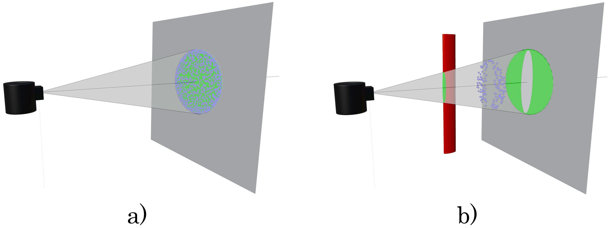
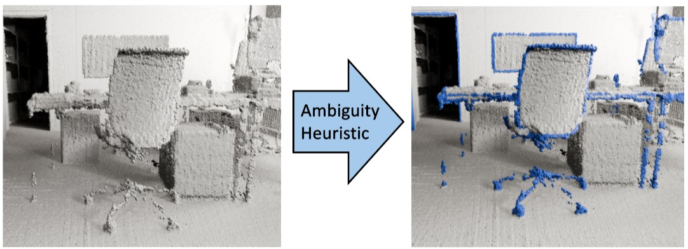
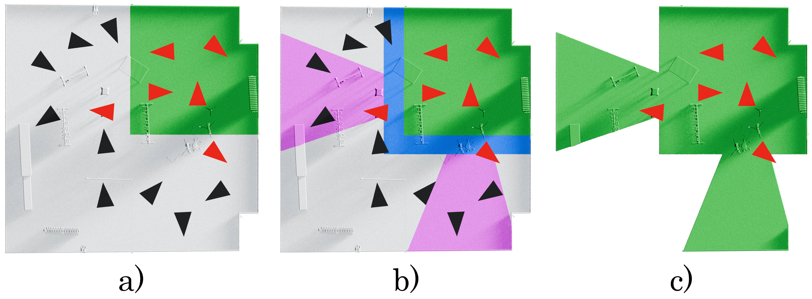

SurfFill:
Completion of LiDAR Point Clouds via Gaussian Surfel Splatting
arXiv
-
Svenja Strobel
FAU Erlangen-Nürnberg
NavVis GmbH -
Matthias Innmann
NavVis GmbH
-
Bernhard Egger
FAU Erlangen-Nürnberg
-
Marc Stamminger
FAU Erlangen-Nürnberg
-
Linus Franke
FAU Erlangen-Nürnberg
Inria, Université Côte d'Azur
 With our method, an incomplete LiDAR point cloud (left) is completed (right) via photometric Gaussian reconstruction.
With our method, an incomplete LiDAR point cloud (left) is completed (right) via photometric Gaussian reconstruction.
Key Insights
- LiDAR scans, while globally precise, often miss thin structures, edges, and dark or absorbent materials, which are regions where photometric reconstruction excels.
- Conversely, image-based reconstruction methods are highly detailed in feature-rich regions but lack LiDAR's accuracy in smooth, textureless areas.
- Our method bridges this gap by combining the strengths of both modalities.
Abstract
LiDAR-captured point clouds are often considered the gold standard in active 3D reconstruction. While their accuracy is exceptional in flat regions, the capturing is susceptible to miss small geometric structures and may fail with dark, absorbent materials. Alternatively, capturing multiple photos of the scene and applying 3D photogrammetry can infer these details as they often represent feature-rich regions. However, the accuracy of LiDAR for featureless regions is rarely reached.
Therefore, we suggest combining the strengths of LiDAR and camera-based capture by introducing SurfFill: a Gaussian surfel-based LiDAR completion scheme. We analyze LiDAR capturings and attribute LiDAR beam divergence as a main factor for artifacts, manifesting mostly at thin structures and edges. We use this insight to introduce an ambiguity heuristic for completed scans by evaluating the change in density in the point cloud. This allows us to identify points close to missed areas, which we can then use to grow additional points from to complete the scan. For this point growing, we constrain Gaussian surfel reconstruction [Huang et al. 2024] to focus optimization and densification on these ambiguous areas. Finally, Gaussian primitives of the reconstruction in ambiguous areas are extracted and sampled for points to complete the point cloud. To address the challenges of large-scale reconstruction, we extend this pipeline with a divide-and-conquer scheme for building-sized point cloud completion. We evaluate on the task of LiDAR point cloud completion of synthetic and real-world scenes and find that our method outperforms previous reconstruction methods.
Video
Contributions
- An analysis of LiDAR artifacts and a novel ambiguity heuristic to identify regions likely adjacent to missing geometry.
- A focused reconstruction pipeline integrating Gaussian surfel splatting with constraints, losses, and sampling strategies tailored for ambiguous regions.
- A procedure that extracts and samples Gaussian primitives to synthesize missing geometry with high fidelity.
- A divide-and-conquer framework enabling completion of building-scale LiDAR scans with tens of millions of points.
LiDAR Artifacts
A LiDAR system works by emitting diverging laser pulses and measuring the time they take to return after reflecting off surfaces to compute precise 3D distances.
- (a)
Flat surfaces are captured accurately.
-
(b)
Thin structures (red) often fall within a beam's divergence and produce multiple different measurements (green), resulting in averaged samples in between surfaces (blue).
Ambiguity Heuristic
Directly identifying missing samples is difficult, but we can estimate closeby areas by computing point densities, with we use as an Ambiguity Heuristic.
Reconstruction Pipeline

Based on the Ambiguity Heuristic, we preprocess (downsample) the LiDAR point cloud non-uniformly, and reconstruct missing areas photometrically with 2D Gaussians [Huang et al. 2024], adjusted and constrained to mainly reconstruct missing areas.
Afterwards, we filter the Gaussian model only for missing areas in the original LiDAR scan and sample additional, synthetic points and combine them with the scan.
Large Scenes

The handling of large scenes is shown with a room example:
a) a chunk (green) selects a subset of cameras (red) inside its bounds or viewing it;
b) the chunk gathers points in its bounding box (green), an extended region (blue), and camera frusta (pink);
c) the final chunk dataset.
Result: LiDAR completion
Result: LiDAR Completion on ScanNet++
Result: LiDAR completion on Synthetic Attic Scene
Comparing with 2DGS [Huang et al. 2024]
Citation
@article{strobel2025surffill,
author = {Svenja Strobel and Matthias Innmann and Bernhard Egger and
Marc Stamminger and Linus Franke},
title = {{SurfFill}: Completion of LiDAR Point Clouds via Gaussian Surfel Splatting},
journal = {ArXiv},
month = {Dez},
year = {2025},
url = {https://lfranke.github.io/surffill}
}Acknowledgements
Our gratitude goes to Stefan Romberg, Michael Gerstmayr, and Tim Habigt for the productive discussions. The authors gratefully acknowledge the scientific support and HPC resources provided by the National High Performance Computing Center of the Friedrich-Alexander-Universität Erlangen-Nürnberg (NHR@FAU) under the project b162dc. NHR funding is provided by federal and Bavarian state authorities. NHR@FAU hardware is partially funded by the German Research Foundation (DFG) – 440719683.
The website template was adapted from RefDepth, who borrowed from VET, who borrowed from Zip-NeRF, who borrowed from Michaël Gharbi and Ref-NeRF.
References
[Huang et al. 2024] Huang, B., Yu, Z., Chen, A., Geiger, A., & Gao, S. (2024, July). 2d gaussian splatting for geometrically accurate radiance fields. In ACM SIGGRAPH 2024 conference papers (pp. 1-11).
[Yu et al. 2024] Yu, Z., Sattler, T., & Geiger, A. (2024). Gaussian opacity fields: Efficient adaptive surface reconstruction in unbounded scenes. ACM Transactions on Graphics (ToG), 43(6), 1-13.
[Yeshwanth et al. 2023] Yeshwanth, C., Liu, Y. C., Nießner, M., & Dai, A. (2023). Scannet++: A high-fidelity dataset of 3d indoor scenes. In Proceedings of the IEEE/CVF International Conference on Computer Vision (pp. 12-22).